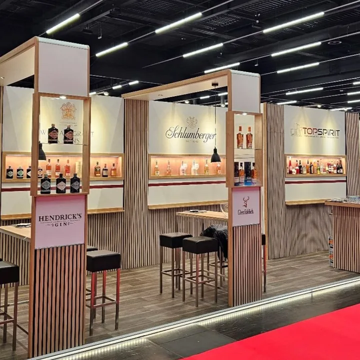
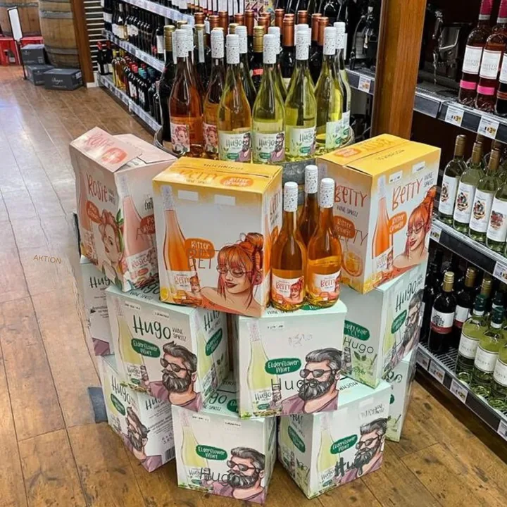
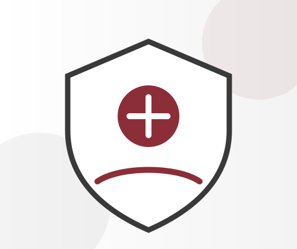
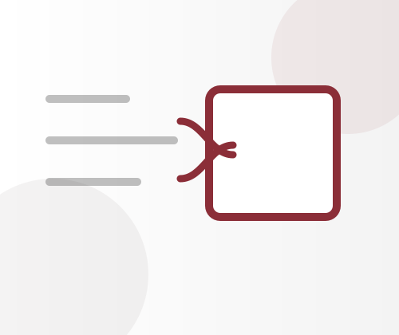
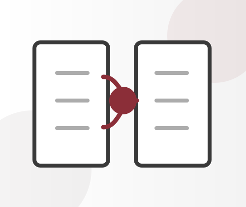
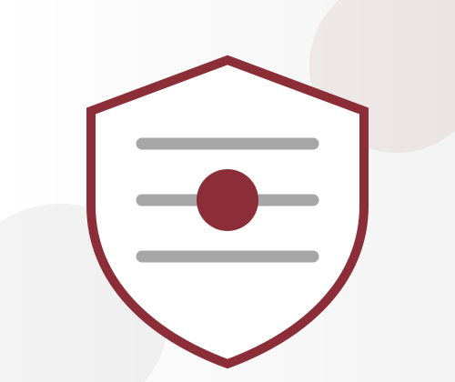
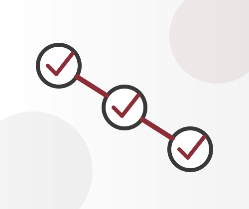
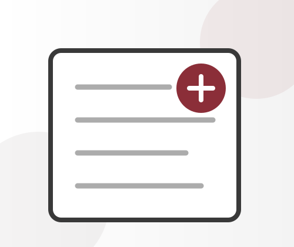
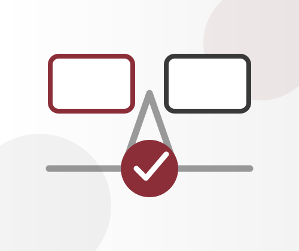

01Experience-led
The page borrows Top Spirit's large photographic card rhythm, then uses it to frame process evidence instead of generic SaaS tiles.
A client-ready command center for process review, automation and AI literacy: Top Spirit brand rhythm on the surface, Export Layer discipline underneath, and every decision wrapped in an Approval Envelope.
The redesign uses the SkillUI extraction from topspirit.at: white canvas, pale surface panels, black editorial type, maroon/red accents, Playfair Display headings, Inter body copy and generous 5px-grid spacing. Translation, not imitation; no client data is embedded.

01The page borrows Top Spirit's large photographic card rhythm, then uses it to frame process evidence instead of generic SaaS tiles.
Plenty of white space, serif headings and restrained maroon accents make the command center feel like a client presentation, not an internal operations screen.

03Every section tells a sponsor what to click, what proof exists, and what still needs a business owner.
The walkthrough is still the spine of the site. The page now introduces it with brand-matched imagery, clear CTAs and a sponsor-safe promise: proposed value, visible controls, honest blockers.
A concise route from exports to approved decisions: process maps, Power BI pilot, automation candidates, literacy handover, privacy and data classification, then the Next-ERP Decision Pack.
Launch interactive walkthrough
Decision status, evidence source, client owner, open blockers and whether a value claim is illustrative, draft, client-needed or ready for demo.
The original command-center vocabulary remains explicit because it is the governance model. Click through the proof spine; each step maps to an artifact the client can inspect.

ERP, CRM, bank, workbook and document inputs enter through a controlled layer first. This keeps early value work ERP-neutral while preserving a path to integrations later.
Open source artifactThe command center still covers the working system. It now presents the operating model in a boardroom-ready format.
Start with files the business already owns, classify them, and keep the future API decision separate from the first value proof.
Turn PDF/email order intake into a controlled draft workflow that never bypasses review.

Match bank statement lines, invoices and exceptions with visible reasoning and approval state.

Separate low-risk suggestions from manager approval and steering-level decisions.

Show source references, transformations and sign-offs before a result gets reused.

Connect the Business Glossary to an Opportunity Catalogue the client can prioritise.
Track savings hypotheses, owner adoption and sustainment without inventing client numbers.

Give leadership a brownfield/greenfield/phased view with evidence, risks and transition logic.
Peer review called out gaps beyond the proof spine. This pass surfaces them as sponsor-readable workstreams without pretending they are finished.
Export inventory, GDPR posture and evidence status are first-class, not a footnote.
The manual report rebuild remains the first credible value demonstrator.
Training, handover and maintainability are visible gates before maturity claims.
Process changes are ranked, but measured savings wait for client time data.
Each candidate receives value, risk, effort, evidence and owner treatment.
Brownfield, greenfield and phased recommendations stay connected to evidence.
Nine artifact cards give Marlin, Joey, Keith, Will, and the client reviewer the same source map. No repository hunting, no stale thread archaeology, no uncertainty about the deck.
TASK-39 through TASK-45 stay visible because a premium client page should not launder unfinished validation into fake certainty.
TASK-39TASK-40TASK-41TASK-42TASK-43TASK-44TASK-45This is the client-facing decision surface for Angel Software Solutions. It keeps AngelServ product vocabulary, Top Spirit visual cues and source-linked proof in one place while making open evidence requests impossible to miss.